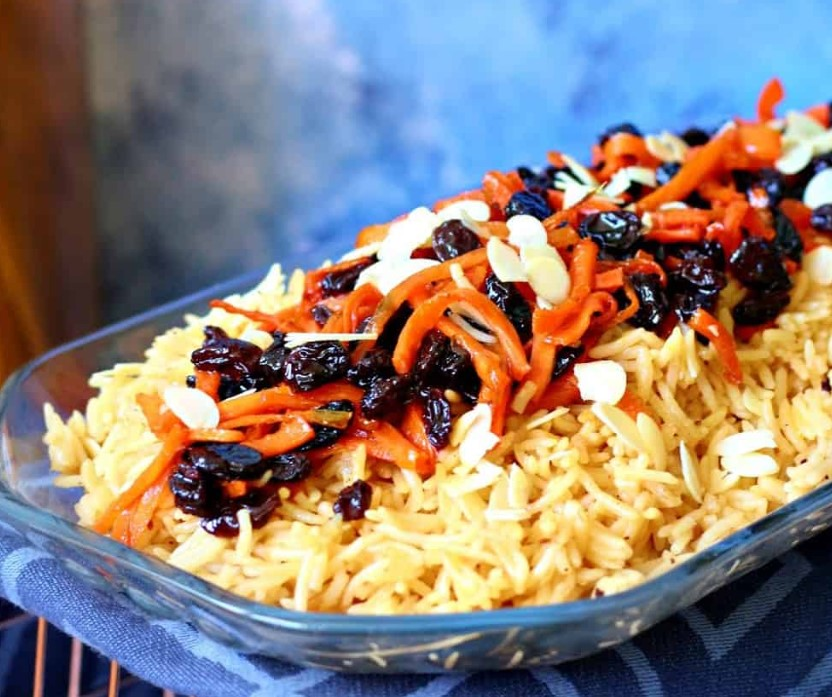

Let us start with the king of Pakistani food, biryani.
Just the sight of colorful rice with lots of spices and well-cooked meat makes you want to dig into the plate.
And believe me, your love of Pakistani biryani will never going to end.
They come with different options of meat types from chicken to lamb.
Chicken Biryani Price: Rs. 200 Rs.170
Muttton Biryani Price: Rs. 450 Rs.400
Beef Biryani Price: Rs. 420 Rs.380
Nalli Biryani Price: Rs. 420 Rs.380
Order Now
Pulao
Pulao is the second most favorite rice dish of Pakistani people.
Although biryani and pulao seem very similar, they are not the same.
All the ingredients of pulao are fried together in the oil instead of being steam-cooked like in the biryani.

Afghani Pulao Price: Rs. 500 Rs.450
Chicken Pulao Price: Rs. 450 Rs.400
Order Now
Lamb or Mutton Sajji
Lamb or mutton sajji originates from the Balochistan province of Pakistan.
Meat and rice are the main ingredients of this gently spiced Pakistani rice dish.
The authentic recipe of sajji includes marinated whole lamb or goat stuffed with rice and local spices.
Discounted Price:Rs.700 Rs.650
Daal Chawal
Daal chawal is a simple but tremendously delicious vegetarian Pakistani food.
The lentils are cooked with simple spices in water until mushy and served with boiled white rice.
Discounted Price:Rs.180 Rs.150
Zarda
Rice dishes are not just limited to savory and main meals.
You also see the ingredient used in the tasty desserts of Pakistan.